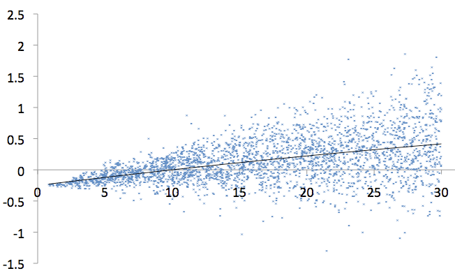
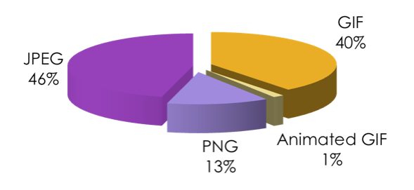
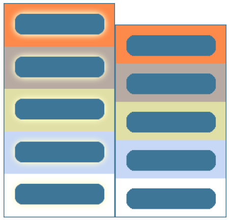
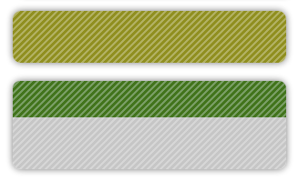
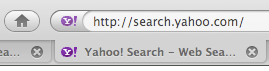

In the previous chapter we talked about reducing the file sizes of most common file types used on the web except for images. Let's tackle images now.
In this chapter you will learn about lossless image optimizations that you can perform on the three common image types used on the web: PNG, JPEG, GIF. You'll also learn about the two major types of PNG: palette (PNG8) and truecolor (PNG24) and see why PNG8 should always be preferred instead of GIF.
Images are an important part of most web pages. Even though we now see increasingly more JavaScript-heavy fat-client web applications, the weight of the images still contributes 40-50% of the total page weight on average. This means that reducing image file sizes helps significantly towards achieving the goal of serving fast pages.
Image optimization is usually done by hand by skilled designers who carefully choose the image quality settings, crop only the relevant parts of an image and so on. These are all subjective optimizations; they require human touch and human eye verification. Let's not talk about these types of optimizations and focus on the lossless optimizations instead. Lossless optimizations are those that take an image and produce another image, which renders exactly the same on the screen as the original, pixel by pixel. Only it's smaller in file size.
The lossless file size savings come from:
In this chapter you'll see that there are a number of free, cross-platform, open-source tools that perform lossless optimizations. Almost all of these tools can run on the command line, which means that you can create a simple script that does all the optimizations for you, picking the right tool for the right file format. You can safely automate this process and not worry about the visual results. You don't need to look at the optimized images, because they will look exactly the same as the originals.
On the web we mainly deal with JPEGs, GIFs (some of them animated), and PNGs. The PNG format also comes in two main variations - PNG8 (a.k.a. palette or indexed PNG) and PNG24 (a.k.a. truecolor or PNG32). PNG8 has all of the features of GIF plus more (and minus animation) and it almost always yields a smaller file size. There is no reason to use GIF anymore; you should convert all non-animated GIFs to PNG8 and benefit from the file size savings.
Let's take a look at the tools available for losslessly optimizing each of the image formats: GIF, JPEG, and PNG.
The best way to optimize a GIF image is to convert it to PNG, more specifically PNG8. PNG8 is a palette image format, just like GIF. It can store up to 256 colors, just like GIF. In addition, PNG8 supports full alpha transparency, which is a little known fact, mainly because of the lack of support among image editing software, such as Photoshop. This is actually worth repeating.
PNG8 supports alpha transparency, although most image editing programs don't give you that option.
When using "Save for Web & Devices", Photoshop offers you to export to, among others, PNG8 and GIF. In both cases Photoshop only allows you to select one color of the palette and make it fully transparent. All others are fully opaque. This is actually what GIF supports, but PNG8 can do better. GIF supports binary transparency, meaning that a single pixel is either fully transparent or fully opaque. PNG8 supports alpha transparency meaning that a pixel can be only partially transparent and whatever is underneath the image can shine through.
In any case, even in Photoshop, PNG8 is at least as good as GIF. There's also no issue with IE6's support for fully transparent pixels in PNG8.
PNG8 almost always yield smaller file sizes. Exceptions are rare and only when an image is really small and contains just a few colors. So in terms of performance optimization all GIFs should be converted to PNG8.
This may sound like a lot of work, but there are tools to help you automate the process. One such tool is OptiPNG. It's a command-line tool that you can run on all operating systems like so:
$ optipng *.gif
This command will convert all GIFs in the current directory to PNG. If you want to be extra careful, you can write a short script that checks whether the result is indeed smaller and if not, keep the GIF. But in general converting all will be better in nearly all cases.
You should convert all GIFs to PNG except for the animated GIFs. Although there are PNG options for animations, most notably the APNG format, they are not yet widely supported. So for simple "loading..." and other animations, you can keep the GIFs, but optimize them.
A tool called GIFSicle is a free option. You run it on the command line like:
$ gifsicle -O2 before.gif > after.gif
This tool optimizes the images, by not carrying over duplicate pixels from one animation frame to another and optimizing the palette used in each frame. Note that the option -O2 has a capitalized letter O (for optimize), not the number 0.
While PNG and GIF are more suitable for decoration graphics, buttons and CSS sprites, JPEG is the right format for photos and other images that contain many colors and gradual transitions of color (not sharp lines and text).
JPEG is a lossy format, meaning that every time you open a JPEG and save it, you'll lose some image information, even if you use the maximum quality setting of 100. But luckily, there are some operations that can be performed losslessly, such as:
For performance purposes, we'll be looking only into the first three operations. A tool that allows you to perform the lossless operations is called JPEGTran.
The image meta data contains information such as the author of the photo, copyrights, date, time, geolocation the photo was taken and so on. You can see how some of this information may be useful and even required. But for the purposes of viewing the image in a browser as part of a web page, much of that data is not needed. Additionally there's a lot of extra data that your users have no use for, data you didn't even intend to include, such as image software internal data, thumbnails of the actual image within the image and even audio. Why send all these extra bytes and slow down the user experience, when this information will never be used?
With JPEGTran you can strip all the meta information from an image. Other software, such as EXIFTool offer fine-grained control over the specific meta fields, while JPEGTran takes an all or nothing approach. The option -copy none in JPEGTran strips all meta data, the option -copy all keeps it intact.
Before stripping all meta information from an image, make sure you own the rights to that image (e.g. you took the photo yourself). Removing photographer name and copyright information is illegal.
In addition to stripping meta data, you can optimize the compression used to store the pixel information using the -optimize option. This is a good practice because many image editors don't write optimized JPEGs. Instead of -optimize, you can use -progressive option which creates progressively loading JPEGs (discussed below).
So the command you need to run on all JPEGs before publishing them on the web looks like so:
$ jpegtran -copy none -optimize before.jpg > after.jpg
Again, substitute -copy none with -copy all if you need to retain all meta data and substitute -optimize with -progressive when you want a progressive JPEG.
The so-called baseline JPEGs load from top to bottom as the image arrives over the network (Figure 5.1). The progressive JPEGs load from low quality to high in several "passes" (Figure 5.2)

A common understanding is that progressive formats produce larger files. While this seems to be true for GIF and PNG, it doesn't look so clear-cut for JPEGs.
In a study of over 10000 JPEGs from all over the web, I found that results vary from one image to the next. But plotting a trendline (Figure 5.3.) shows that images of file size 10K and over have a better chance of being smaller when using the progressive JPEG format. The difference could be up to 10% (with 3% median) but in extreme cases that translated to 250K of savings.

Since this is just a trend and not applicable to all images, if you're focused on producing the smallest size possible, you can try both formats and pick the smaller result. Otherwise you can simply establish a general of thumb: baseline for thumbnails, progressive for the actual photos.
It's not common to see photos on the web that render the way progressive JPEGs do, because the majority of the JPEGs use baseline coding (the power of the defaults in action). This may cause some web professionals to dismiss the progressive JPEGs as looking too old school. But on the other hand iPhone always renders all photos like progressively coded JPEGs, from low resolution to higher. So we can speculate that in the future people may become more and more familiar with this visual pattern and even expect it.
Most image editing programs don't write properly optimized PNG files. Luckily, there are many free tools to remedy the situation. Some of the tools strip the so-called PNG chunks and some offer better compression of the pixel data. Many do both. Since the different tools provide different results by each doing its own thing, for best savings you can run as many tools as you can, one on the result of the previous. Naturally, this will slow down the optimization process and in fact the benefits diminish with each additional tool. So unless you're really motivated to produce the smallest results, running just one the tools would be enough and often significantly reduce the size of the file produced by the image program.
PNG is an extensible image format, which allows feature extensions to be implemented and stored in "chunks". Image software that doesn't understand a certain chunk can simply ignore it and still be able to work with the image. For the purposes of displaying images in a web page, most of the chunks can be stripped; they are not needed and in fact can be dangerous. For example a gamma correction chunk aims to solve the problem of inconsistent display of colors in different operating systems, but in fact introduces inconsistency between a color value in PNG and the same color in CSS in some browsers. Removing the gamma correction chunk solves this problem.
Let's see some of the PNG optimization tools and their options.
PNGCrush removes unneeded chunks and tries different compression methods. It can be run like so:
$ pngcrush -rem alla -reduce before.png after.png
The option -rem alla removes all chunks except for transparency. If you want to retain all chunks, use -rem none. You can also pick and choose individual chunks to preserve. An additional option -brute makes more attempts to optimize compression resulting in slower but even better optimization.
OptiPNG is also a command-line tool, but it has several GUI versions for both PC and Mac. As you saw with the GIF conversion, you can simply be run it like:
$ opting *.gif
or
$ optipng *.png
OptiPNG has seven levels of optimization, which you can specify using the -o option, like so:
$ optipng -o7 before.png -out after.png
Option -o7 means best (slowest) compression and two (option -o2) is the default.
This tool is Windows-only, it has a GUI and command-line versions:
$ pngoptimizercl -file:"image.png"
Or to optimize in bulk:
$ pngoptimizercl -file:"*.png"
PNGOut is closed source, has a paid Windows GUI and free command-line binaries for Windows, Mac, Linux. By default PNGOut uses the best (slowest) compression:
$ pngout image.png
If you want faster optimization you can select a strategy from 0 (best) to 5 (no compression). You can also specify a different filename for the result if needed:
$ pngout -s2 before.png after.png
Setting for best compression:
$ advpng -z4 image.png
Windows-only binary, closed source, usually the last tool to run when running several tools in succession:
$ deflopt *.png
One final tool worth mentioning is PNGSlim. It's actually a Windows .bat file, which runs most of the other tools in the list above with different options. It's therefore the slowest (since it runs all others) but produces the smallest sizes possible.
The list of available PNG optimizations may look overwhelming, but it's given here mostly if you want to invest the time to build your own image optimization script with the best results. Otherwise, just running one of the tools will be a significant improvement over not optimizing at all. How significant? Let's see.
So far you learned about the ways to reduce file sizes losslessly for each type of image. To summarize:
Now let's see what will happen if you follow these guidelines and optimize all the images found on the top 1000 websites in the world. Have in mind that these are the top high-traffic sites, which means that they should probably be well optimized or at least better than the average website.
The survey of the top 1000 was provoked by the curiosity as to how widespread is the superior PNG format, compared to the old GIF. Turns out that GIFs are still predominantly used (Figure 5.4.), despite the fact that PNG specs have been released 14 years ago and the modern browsers support the format (the transparency issue in IE6 is addressed in the next section of this chapter)

Now that we know the distribution, the question is: are the images optimized and can we do better?
Converting all GIFs to PNG resulted in significant savings - 23.79%. This is obviously a lot of bandwidth to gain. The process of converting is quick and painless; it only takes about 1 minute per 1000 images. For this experiment I ran the tools OptiPNG and PNGOptimizer like so:
$ optipng *.gif
$ pngoptimizercl -file:"*.png"
As you can see, converting all GIFs to PNG is a clear win. But what about the images that are already PNG, are they optimized?
Turns out that simply running all PNGs through a single tool - PNGOptimizer - gives 16.90% savings. Not bad at all given that all it took was running one command:
$ pngoptimizercl -file:"*.png"
The results could be even better if you run several tools with different options, in addition to PNGOptimizer.
Running all JPEGs through JPEGTran resulted in 13.08% savings, using the command:
$ jpegtran -copy none -outfile destination.jpg -optimize source.jpg
Again, you can do better by trying progressive encoding and picking the smaller result.
Running GIFSicle on all GIF animation was able to shave 4.6% off the file sizes. The savings are not as pronounced as the other image types, but every little bit helps, especially if the process is automated and doesn't require any manual effort.
A well-known issue exists in the way IE6 handles transparency in truecolor PNGs (PNG24). Some of the transparent areas become a flat color, usually grey (Figure 5.5.). This is solved using IE's proprietary CSS filter called AlphaImageLoader.

If you need an alpha transparent truecolor PNG as a background, you can use the underscore CSS hack to target only IE6, unset the background and provide the filter declaration:
.classname { background: url(image.png); _background: none; _filter:progid:DXImageTransform.Microsoft.AlphaImageLoader (src='image.png', sizingMethod='crop'); }
Another solution to the problem involves the use of VML (Vector Markup Language) and is a little more complicated.
There also exist a number of solutions (usually called "pngfix") that automatically solve the problem for you using JavaScript and commonly an .htc file. HTC stands for HTML Components and is a non-standard extension by Microsoft. The pngfix solutions are convenient since they use JavaScript to generate the filter or the VML code without you having to do complex work in CSS or HTML.
There are several problems with those solutions:
To summarize - avoid AlphaImageLoader and transparent truecolor PNGs. Try to work with a different design or use a PNG8 alpha transparent image. If all else fails, use a PNG fix script that doesn't introduce a new HTTP component to download and uses a VML solution to transparency.
As already mentioned, despite the lack of image editing software support, PNG8 does offer alpha transparency and it's supported across all modern browsers. IE6 is again an exception, but not as bad as the PNG24 alpha transparency.
In IE6, all partially transparent pixels in a PNG8 image become fully transparent. In other words, in IE6 PNG8 behaves like a GIF.
Sometimes designers use a truecolor PNG for all browsers, but provide a separate GIF for IE6. This is not an ideal solution, because it creates maintenance issues (maintaining two images) and you can actually use a single PNG8 to support all browsers.
All you need to do is create a progressively enhanced PNG8 - one that looks OK when viewed in IE6 (looks like a GIF) and gets progressively better in the modern browsers (Figure 5.6.)

There are tools that take a truecolor PNG24 image and convert it to a PNG8. In this process the tools might reduce the number of colors if the original contains more than 256 colors. After this conversion the PNG8 will behave as expected in all browsers and degrade to a GIF-like in IE6. However, automatic conversion might not always create gracefully degraded GIF-like experience. You'll need to edit the image by hand to make sure that after IE6 drops all semi-transparent pixels and displays them as fully transparent, the image still looks acceptable using solid opaque pixels only.
Let's see a recipe of using Photopshop to create a truecolor alpha transparent PNG24 in a way that will allow you to convert it to a progressively enhanced PNG8 using the command line tool PNGQuant. The end result is the image shown on Figure 5.6.
First, you create a button-like rounded corner rectangle using Photoshop's rectangle tool. We'll keep this in a layer called "Original" (Figure 5.7.). This layer will have 99% opacity, which effectively hides it completely from IE6.

Since we want to use the same button on top of different colors, we cannot use a GIF, because it will contain a few almost white pixels around the edges. So we copy the "Original" layer into a new one (named "Solid", Figure 5.8.) and use the mountain tops technique to make the rounded corners look acceptable even when using a single solid color. This is the way IE6 will see the end result. It's convenient to keep this as a separate layer, so that in Photoshop you can toggle layer visibility and preview the end result in IE6 and in all other browsers.

Finally, we add another layer with 99% opacity (to hide it from IE6) which adds the yellowish glow (Figure 5.9.).

Now, using "Save for Web and Devices" you can export this image as a PNG24 and then convert it to PNG8 using PNGQuant:
$ pngquant 256 button.png
This command sets the max number of colors to 256 and produces an alpha transparent PNG8 in a file called button-fs.png.
The result PNG8 image will behave the same as the PNG24 original in all browsers, and will look like the "Solid" layer with a binary transparency in IE6. This is because the other two layers have 99% opacity which IE6 will treat as 0% opacity (fully transparent).
As you know, the best way to speed up a page is to have fewer page components. One way to get better at this is to use the same image for various purposes. Let's see a technique that allows you to put a background image over different background colors and have different results.
One example of the technique is shown on Figure 5.10. The background color in this example is different for each button (and changed on hover), but the background image that creates the glossy effect is the same.

The background image is a PNG8, 1px wide by 1000px high (just to be safe) and is repeated horizontally in CSS. The upper 500px (half the image) is partially transparent, while the bottom 500px is fully transparent.
The HTML:
<p class="button">button1</p> <p class="button button2">button2</p> <p class="button button3">button3</p> <p class="button button4">button4</p> <p class="button button5">button5</p> <p class="button button6">button6</p>
The CSS:
.button { background-image: url(mask.png); background-position: center; color: white; -moz-border-radius: 10px; -webkit-border-radius: 10px; border-radius: 10px; } .button:hover {background-color: #f29222;} .button2 {background-color: #a41d1c;} .button3 {background-color: #0f6406;} .button4 {background-color: #333f79;} .button5 {background-color: black;} .button6 {background-color: orange; color: black;}
As you can see, you can reuse the same image and create any number of colorful buttons. This can be especially useful for themes and social profile customizations, which allow the user to pick any color.
In IE6 the whole PNG8 image will appear fully transparent, so the glossy effect will degrade to the solid background color.
Additional optimization is to use data URIs (from Chapter 3) to inline the image, since 1x1000 image is only about 100 bytes. This way you avoid the HTTP request altogether at the price of degrading the IE7 experience to IE6-like, since IE7 doesn't support data URIs.
Another example of reusing the same image is shown on Figure 5.11. A tiny background image contains diagonal stripes made of semi-transparent and fully transparent lines. Using such image on top of different colors, allows you to reuse the image (Figure 5.11, Figure 5.12)

Yet another example of reusable images is to create a gradient image, but one that changes transparency (not color) gradually. Using this image as a background on top of solid color will help you create any gradient with a single image. In fact this image will be about the same file size as if you use CSS3, -moz, -webkit, and two filter declarations (one for IE8 and one IE < 8) for creating cross-browser image-less gradients in CSS.
The little favicon.ico files that sit in the root of your website may be a source of inefficiencies too. Sometimes you simply forget them because, technically, they are not part of the page. When you forget them, the browsers will still request them and your server will reply with a 404 Not Found page. Sites often have complex 404 pages, which query data and try to guess what the person might have had in mind when they came across the dead page. In case of missing favicons, all that work to create a 404 page is a waste, since it's never displayed or used. So keep in mind to always have a favicon.

Favicons are usually small, around a little over 1K. This is a good file size to aim at. If possible, don't go overboard with big icons and animations. As discussed in the previous chapter it also makes sense to send the favicon with gzip encoding, especially if it's bigger in size.
If you want to have a really tiny favicon (318 bytes) you can keep it under 16 colors. Converting an existing icon to one that only has 16 colors can be done on the command line, using ImageMagick's convert utility:
$ convert -colors 16 someimage.png favicon.ico
This is, of course, a lossy operation (since colors are reduced) so the result should be checked visually.
The savings from lossless optimizations may vary from one image to the next, but these optimizations are easy to do, easy to automate and risk-free. Therefore you should never put an image on your web site that comes directly from image editing software without running it through an optimization tool. The four basic steps at image size reduction are:
Just remembering (or automating) these four steps will have you well on the way to a leaner site.
If you can invest more time in image optimization, you should: